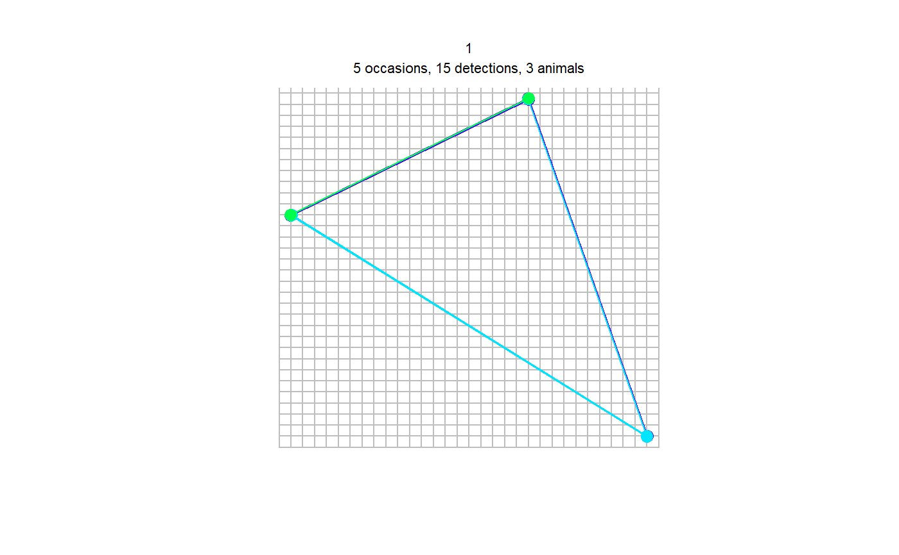
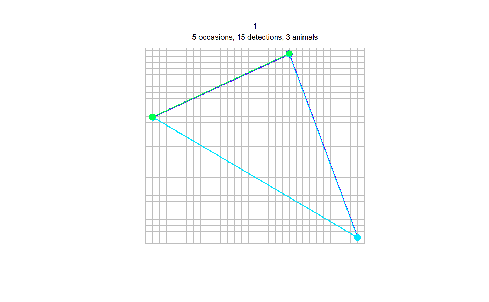

Generate a capthist object for spatial capture-recapture analyses
from camera-trapping data
Source: R/spatialDetectionHistory.R
spatialDetectionHistory.RdThis function generates spatial detection histories of individuals of a
species for spatial capture-recapture analyses with package
secr. Data are stored in a
capthist object. The capthist object
contains detection histories, camera-trap station location and possibly
individual and station-level covariates. Detection histories can have
adjustable occasion length and occasion start time (as in the function
detectionHistory).
spatialDetectionHistory( recordTableIndividual, species, camOp, CTtable, output = c("binary", "count"), stationCol = "Station", speciesCol = "Species", sessionCol, Xcol, Ycol, stationCovariateCols, individualCol, individualCovariateCols, recordDateTimeCol = "DateTimeOriginal", recordDateTimeFormat = "ymd hms", occasionLength, minActiveDaysPerOccasion, occasionStartTime = "deprecated", maxNumberDays, day1, buffer, includeEffort = TRUE, scaleEffort = FALSE, binaryEffort = FALSE, timeZone, makeRMarkInput )
Arguments
| recordTableIndividual | data.frame. the record table with individual
IDs created by |
|---|---|
| species | character. the species for which to compute the detection history |
| camOp | The camera operability matrix as created by
|
| CTtable | data.frame. contains station IDs and coordinates. Same as
used in |
| output | character. Return individual counts ("count") or binary observations ("binary")? |
| stationCol | character. name of the column specifying Station ID in
|
| speciesCol | character. name of the column specifying species in
|
| sessionCol | character. name of the column specifying session IDs,
either in |
| Xcol | character. name of the column specifying x coordinates in
|
| Ycol | character. name of the column specifying y coordinates in
|
| stationCovariateCols | character. name of the column(s) specifying
station-level covariates in |
| individualCol | character. name of the column specifying individual IDs
in |
| individualCovariateCols | character. name of the column(s) specifying
individual covariates in |
| recordDateTimeCol | character. name of the column specifying date and
time in |
| recordDateTimeFormat | format of column |
| occasionLength | integer. occasion length in days |
| minActiveDaysPerOccasion | integer. minimum number of active trap days for occasions to be included (optional) |
| occasionStartTime | (DEPRECATED) integer. time of day (the full hour)
at which to begin occasions. Please use argument |
| maxNumberDays | integer. maximum number of trap days per station (optional) |
| day1 | character. When should occasions begin: station setup date ("station"), first day of survey ("survey"), a specific date (e.g. "2015-12-31")? |
| buffer | integer. Makes the first occasion begin a number of days after station setup. (optional) |
| includeEffort | logical. Include trapping effort (number of active
camera trap days per station and occasion) as usage in
|
| scaleEffort | logical. scale and center effort matrix to mean = 0 and sd = 1? Currently not used. Must be FALSE. |
| binaryEffort | logical. Should effort be binary (1 if >1 active day per occasion, 0 otherwise)? |
| timeZone | character. Must be a value returned by
|
| makeRMarkInput | logical. If |
Value
Output depends on argument makeRMarkInput:
A capthist object
A data frame for use in RMark
Details
The function creates a capthist object by combining
three different objects: 1) a record table of identified individuals of a
species, 2) a camera trap station table with station coordinates and 3) a
camera operation matrix computed with cameraOperation. The
record table must contain a column with individual IDs and optionally
individual covariates. The camera trap station table must contain station
coordinates and optionally station-level covariates. The camera operation
matrix provides the dates stations were active or not and the number of
active stations.
day1 defines if each stations detection history will begin on that
station's setup day (day1 = "station") or if all station's detection
histories have a common origin (the day the first station was set up if
day1 = "survey" or a fixed date if, e.g. day1 = "2015-12-31").
includeEffort controls whether an effort matrix is computed or not.
If TRUE, effort will be used for object usage
information in a traps. binaryEffort makes the
effort information binary. scaleEffort is currently not used and must
be set to FALSE. The reason is that usage can only be
either binary, or nonnegative real values, whereas scaling effort would
return negative values.
The number of days that are aggregated is controlled by
occasionLength. occasionStartTime will be removed from the
function. It has moved to cameraOperation, to ensure daily
effort is computed correctly and takes the occasion start time into
account.
another hour than midnight (the default). This may be relevant for nocturnal
animals, in which 1 whole night would be considered an occasion.
Output can be returned as individual counts per occasion (output =
"count") or as binary observation (output = "binary").
Argument sessionCol can be used to a create multi-session
capthist object. There are two different ways in which
the argument is interpreted. It depends on whether a column with the name
you specify in argument sessionCol exists in
recordTableIndividual or in CTtable. If sessionCol is
found in recordTableIndividual, the records will be assigned to the
specified sessions, and it will be assumed that all camera trap station were
used in all sessions. Alternatively, if sessionCol is found
inCTtable, it will be assumed that only a subset of stations was used
in each session, and the records will be assigned automatically (using the
station IDs to identify which session they belong into). In both cases,
session information must be provided as a sequence of integer numbers
beginnign with 1, i.e., you provide the session number directly in
sessionCol. See session for more information
about sessions in secr.
capthist objects (as created by
spatialDetectionHistory for spatial capture-recapture
analyses) expect the units of coordinates (Xcol and col in
CTtable) to be meters. Therefore, please use a suitable coordinate
system (e.g. UTM).
recordDateTimeFormat defaults to the "YYYY-MM-DD HH:MM:SS"
convention, e.g. "2014-09-30 22:59:59". recordDateTimeFormat can be
interpreted either by base-R via strptime or in
lubridate via parse_date_time (argument
"orders"). lubridate will be used if there are no "%" characters in
recordDateTimeFormat.
For "YYYY-MM-DD HH:MM:SS", recordDateTimeFormat would be either
"%Y-%m-%d %H:%M:%S" or "ymd HMS". For details on how to specify date
and time formats in R see strptime or
parse_date_time.
Warning
Please note the section about defining argument
timeZone in the vignette on data extraction (accessible via
vignette("DataExtraction") or online
(https://cran.r-project.org/package=camtrapR/vignettes/camtrapr3.html)).
See also
secr RMark
Author
Juergen Niedballa
Examples
data(recordTableIndividualSample) data(camtraps) # create camera operation matrix (with problems/malfunction) camop_problem <- cameraOperation(CTtable = camtraps, stationCol = "Station", setupCol = "Setup_date", retrievalCol = "Retrieval_date", writecsv = FALSE, hasProblems = TRUE, dateFormat = "dmy" ) sdh <- spatialDetectionHistory(recordTableIndividual = recordTableIndividualSample, species = "LeopardCat", camOp = camop_problem, CTtable = camtraps, output = "binary", stationCol = "Station", speciesCol = "Species", Xcol = "utm_x", Ycol = "utm_y", individualCol = "Individual", recordDateTimeCol = "DateTimeOriginal", recordDateTimeFormat = "ymd hms", occasionLength = 10, day1 = "survey", includeEffort = TRUE, timeZone = "Asia/Kuala_Lumpur" )#> Warning: hms, hm and ms usage is deprecated, please use HMS, HM or MS instead. Deprecated in version '1.5.6'.# missing space in species = "LeopardCat" was introduced by recordTableIndividual # (because of CRAN package policies. # In your data you can have spaces in your directory names) summary(sdh)#> Object class capthist #> Detector type proximity #> Detector number 3 #> Average spacing 2258.871 m #> x-range 523000 526000 m #> y-range 604000 607050 m #> #> Usage range by occasion #> 1 2 3 4 5 #> min 7.5 10 10 10 0.0 #> max 9.5 10 10 10 4.5 #> #> Counts by occasion #> 1 2 3 4 5 Total #> n 2 2 3 2 1 10 #> u 2 0 1 0 0 3 #> f 0 1 0 2 0 3 #> M(t+1) 2 2 3 3 3 3 #> losses 0 0 0 0 0 0 #> detections 3 4 4 3 1 15 #> detectors visited 2 3 3 2 1 11 #> detectors used 3 3 3 3 2 14#> Warning: track for repeat detections on same occasion joins points in arbitrary sequence## multi-season capthist object # see vignette "3. Extracting Data from Camera Trapping Images, creating occupancy & secr input" data(camtrapsMultiSeason) camtrapsMultiSeason$session[camtrapsMultiSeason$session == 2009] <- 1 camtrapsMultiSeason$session[camtrapsMultiSeason$session == 2010] <- 2 data(recordTableIndividualSampleMultiSeason) # create camera operation matrix (with problems/malfunction) camop_session <- cameraOperation(CTtable = camtrapsMultiSeason, stationCol = "Station", setupCol = "Setup_date", sessionCol = "session", retrievalCol = "Retrieval_date", hasProblems = TRUE, dateFormat = "dmy" ) sdh_multi <- spatialDetectionHistory(recordTableIndividual = recordTableIndividualSampleMultiSeason, species = "LeopardCat", output = "binary", camOp = camop_session, CTtable = camtrapsMultiSeason, stationCol = "Station", speciesCol = "Species", sessionCol = "session", Xcol = "utm_x", Ycol = "utm_y", individualCol = "Individual", recordDateTimeCol = "DateTimeOriginal", recordDateTimeFormat = "ymd hms", occasionLength = 10, day1 = "survey", includeEffort = TRUE, timeZone = "Asia/Kuala_Lumpur", stationCovariateCols = "utm_y", # example individualCovariateCols = "Individual" # example )#> Warning: hms, hm and ms usage is deprecated, please use HMS, HM or MS instead. Deprecated in version '1.5.6'.#> $`1` #> Object class capthist #> Detector type proximity #> Detector number 3 #> Average spacing 2258.871 m #> x-range 523000 526000 m #> y-range 604000 607050 m #> #> Usage range by occasion #> 1 2 3 4 5 #> min 7.5 10 10 10 0.0 #> max 9.5 10 10 10 4.5 #> #> Counts by occasion #> 1 2 3 4 5 Total #> n 2 2 3 2 1 10 #> u 2 0 1 0 0 3 #> f 0 1 0 2 0 3 #> M(t+1) 2 2 3 3 3 3 #> losses 0 0 0 0 0 0 #> detections 3 4 4 3 1 15 #> detectors visited 2 3 3 2 1 11 #> detectors used 3 3 3 3 2 14 #> #> Individual covariates #> Individual #> 1:1 #> 2:1 #> 3:1 #> #> #> $`2` #> Object class capthist #> Detector type proximity #> Detector number 4 #> Average spacing 2258.871 m #> x-range 523000 526000 m #> y-range 604000 607050 m #> #> Usage range by occasion #> 1 2 3 4 5 6 7 8 9 #> min 2.5 10 10 10 5 0 0 0 0.0 #> max 4.5 10 10 10 10 3 6 10 1.5 #> #> Counts by occasion #> 1 2 3 4 5 6 7 8 9 Total #> n 1 2 2 0 1 0 0 0 0 6 #> u 1 1 0 0 0 0 0 0 0 2 #> f 0 0 2 0 0 0 0 0 0 2 #> M(t+1) 1 2 2 2 2 2 2 2 2 2 #> losses 0 0 0 0 0 0 0 0 0 0 #> detections 1 2 2 0 1 0 0 0 0 6 #> detectors visited 1 1 2 0 1 0 0 0 0 5 #> detectors used 4 4 4 4 4 1 1 1 1 24 #> #> Individual covariates #> Individual #> 1:1 #> 2:1 #> #>#> Warning: screen layout does not allow for all sessions and some plots may be lost; set par mfrow#> Warning: track for repeat detections on same occasion joins points in arbitrary sequence#> 1 2 #> 15 6